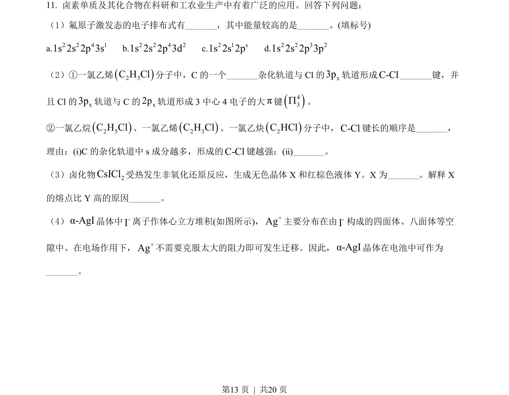
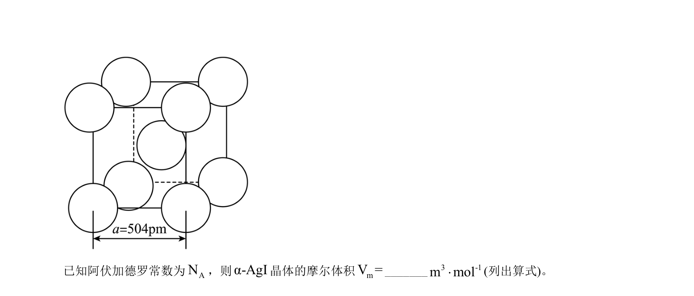
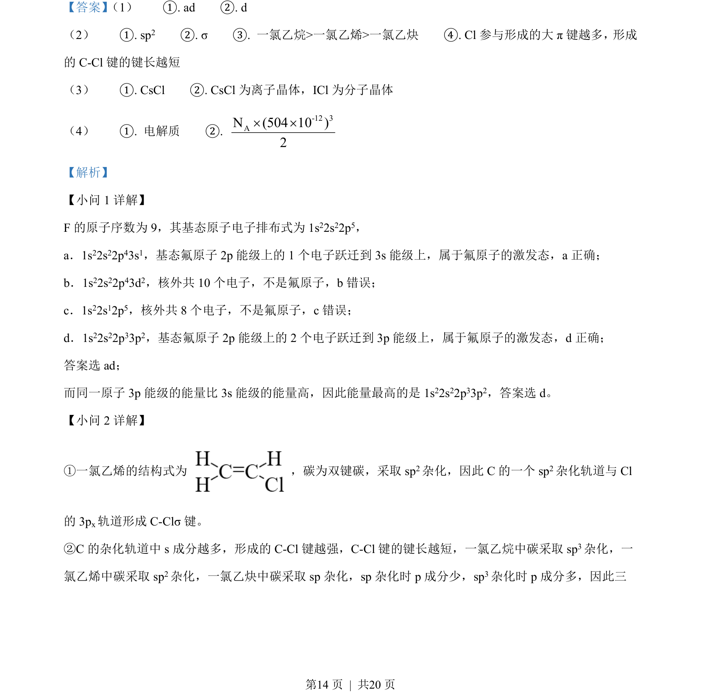
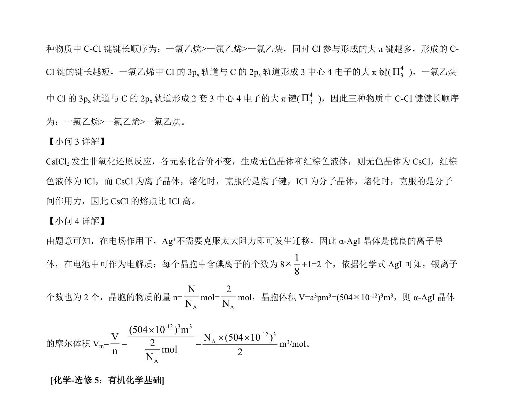

考点：原子激发态 杂化轨道 键长 离子晶体与分子晶体 晶胞计算
原子激发态
杂化轨道
键长
离子晶体与分子晶体
晶胞计算


考查氟原子激发态能量、C-Cl键长比较、晶体类型与熔点判断及晶胞摩尔体积计算。


📄 原 PDF 第 13 页：素材/真题/吉林/2008-2024·（吉林）化学高考真题/2022年高考化学试卷（全国乙卷）（解析卷）.pdf
素材/真题/吉林/2008-2024·（吉林）化学高考真题/2022年高考化学试卷（全国乙卷）（解析卷）.pdf